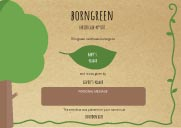
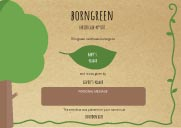

Why buy a tree for a newborn child? We believe that if you let a child grow alongside their personal tree, they might develop a deeper understanding and connection to nature. We as humans should not solely see ourselves as visitors in forests, but as a part of them.
Our trees are more than just a gift for the newborn. We invest half the profit of our sales, in educating children in sustainability.
Our trees come with a gift combo, consisting of a personal token and a tree certificate.
The personalized token is a small sculpture in the shape of a tree with the name of the baby and geographical coordinates of the tree carved into it. The tokens are carved in tree by local woodworkers and designed as 3D puzzles , safe for children to play with. Once the child has grown up, the token can be used decorational.
The certificate will be an official declaration of the “ownership” of the tree that is planted for the baby and who will state who gave it. B The certificate will, as well as the token, hold the geographical coordinates of the tree, a serial number and possibly a personal message from the giver.

 

To secure the best conditions for the trees and proper growth, trees are planted twice a year. The seasons for planting are: from March to May and August to November.
Once you’ve chosen a location for your tree, and the tree has been planted, the specific geographical coordinates will be stored and given to you, so that you and the child always will be able to locate and visit your tree.